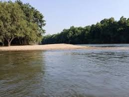
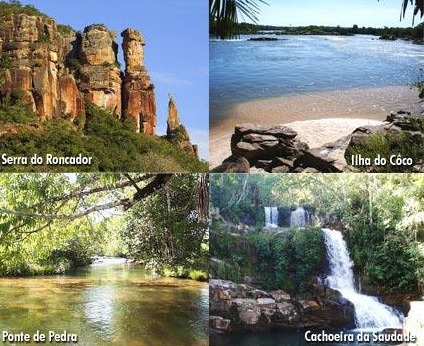
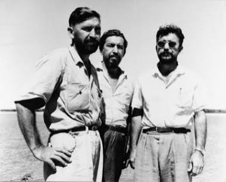

Educação ambiental
Conteúdos para ampliar a compreensão sobre preservação, prevenção de danos e uso responsável dos recursos naturais.
Nova Xavantina • Mato Grosso
Informação, educação ambiental e recursos úteis para fortalecer a prevenção, a responsabilidade socioambiental e a cidadania nas comunidades da região.


Eixos do projeto
O site foi estruturado para reunir conteúdo institucional do projeto, palestras gravadas, referências ambientais e caminhos rápidos para órgãos públicos e informações de interesse local.
Conteúdos para ampliar a compreensão sobre preservação, prevenção de danos e uso responsável dos recursos naturais.
Materiais reunidos em linguagem clara, com navegação simples para moradores, trabalhadores rurais e demais interessados.
Foco nas comunidades de Alvorada, Córrego do Jatobá, Vila do Banco Safra e nos demais munícipes de Nova Xavantina.
Território
Nova Xavantina reúne formações rochosas, cachoeiras, praias naturais e ilhas fluviais associadas ao Rio das Mortes, em uma paisagem marcada pelo Cerrado e por zonas de transição para a Amazônia.
Conhecer o portal turístico de Nova Xavantina ↗Institucional
Finalidade, público e compromisso ambiental do projeto.
Este site foi criado no âmbito do Termo de Ajustamento de Conduta (TAC) firmado entre o Espólio de Wolnei Divino Franco e o Ministério Público do Estado de Mato Grosso, como parte das medidas de compensação ambiental e social pela degradação ocorrida na região de Nova Xavantina/MT.
Nosso objetivo é centralizar informações, disponibilizar palestras gravadas e oferecer recursos úteis para a comunidade de Alvorada, Córrego do Jatobá, Vila do Banco Safra e demais munícipes de Nova Xavantina.
Acreditamos que a educação ambiental e o acesso à informação são ferramentas essenciais para prevenir novos danos, promover o desenvolvimento sustentável e fortalecer a cidadania.
A existência humana na Terra depende da preservação da natureza. Este site é uma contribuição para que possamos, juntos, construir um futuro mais equilibrado e consciente.
Memória e responsabilidade

Este projeto nasce da necessidade de reparar um dano ambiental, mas também do desejo de honrar a memória de Wolnei Divino Franco, que dedicou sua vida a esta terra e que, infelizmente, não pôde ver a conclusão deste trabalho.
Ele foi um dos primeiros advogados da região, participou da fundação da cidade de Campinápolis/MT — que derivou do município de Nova Xavantina/MT — e foi o primeiro advogado a trabalhar na legalização das terras da viúva Estephânia Brawn.
Em 1990, em Perdizes/MG, colaborou com o Ministério Público na elaboração de Termos de Ajustamento de Conduta (TACs), quando uma empresa suíça, que havia despejado amônia em um córrego da cidade, firmou um acordo para doar um laboratório de química para a Escola Estadual de Perdizes.
Que esta iniciativa sirva como um legado de responsabilidade ambiental e cuidado com a comunidade.
Educação ambiental
Área preparada para receber gravações, materiais de apoio e conteúdos de interesse da comunidade.
Conteúdos introdutórios sobre proteção ambiental, prevenção de danos e responsabilidades compartilhadas.
Materiais voltados à realidade das comunidades rurais e aos desafios ambientais locais.
Guias e referências para localizar informações confiáveis em órgãos ambientais e instituições públicas.
Acesso direto
Links institucionais para consulta de informações ambientais, orientações e serviços públicos.
Portal estadual de informações, serviços e políticas ambientais.
Acessar site oficial ↗ MPMTPortal institucional do Ministério Público de Mato Grosso.
Acessar site oficial ↗ IBAMAInformações federais sobre educação ambiental, fiscalização, recuperação e reparação de danos.
Acessar site oficial ↗Fontes públicas consultadas